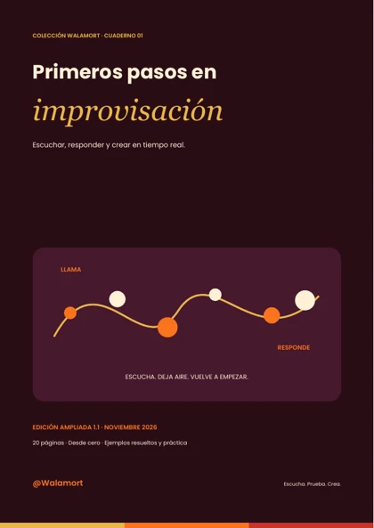
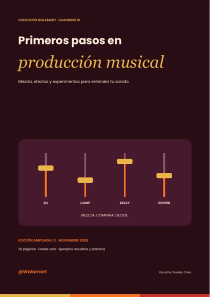

Disponible · PDF en español
Disponible · PDF en españolPack Handpan
Los tres niveles de la colección actual: básico, intermedio y avanzado. Para explorar el instrumento con una ruta de estudio.
$69.900 COP
Referencia para Colombia verificada el 1 de noviembre de 2026. Hotmart muestra la moneda, condiciones y total final antes del pago.
 Disponible · PDF en español
Disponible · PDF en españolPack Tongue drum
Los tres niveles de la colección actual: básico, intermedio y avanzado. Para explorar el instrumento con una ruta de estudio.
$69.900 COP
Referencia para Colombia verificada el 1 de noviembre de 2026. Hotmart muestra la moneda, condiciones y total final antes del pago.
 Disponible · PDF en español
Disponible · PDF en españolPack Kalimba
Los tres niveles de la colección actual: básico, intermedio y avanzado. Para explorar el instrumento con una ruta de estudio.
$69.900 COP
Referencia para Colombia verificada el 1 de noviembre de 2026. Hotmart muestra la moneda, condiciones y total final antes del pago.
Nuevo · Muestra gratuitaArmonía aplicada
Construye tríadas, relaciona grados, explora inversiones y acompaña una melodía.
Muestra de 5 páginas en español. El cuaderno piloto completo tiene 16 páginas: ejercicios, proyecto, plan de cuatro semanas y revisión.
Ver temario del piloto
- Escuchar antes de nombrar
- Una escala, dos alfabetos
- Tres notas construyen un acorde
- Siete acordes de Do
- Reposo, salida y regreso
- Dos maneras de cerrar
- El bajo cambia la perspectiva
- La menor: dos dominantes
- Acompañar una melodía
- Enlazar sin saltar de más
- Proyecto: ocho compases
- Cuatro semanas de práctica
- Hoja de trabajo
- Respuestas y posibilidades
Edición piloto en revisión editorial. La edición completa todavía no está a la venta; sin precio ni fecha anunciados.
Nuevo · Muestra gratuitaComposición desde un motivo
Desarrolla una idea breve, organiza frases y crea una miniatura de ocho o doce compases.
Muestra de 5 páginas en español. El cuaderno piloto completo tiene 16 páginas: ejercicios, proyecto, plan de cuatro semanas y revisión.
Ver temario del piloto
- Tu idea merece una forma
- Una cuadrícula para escribir
- El motivo: una huella pequeña
- El ritmo también compone
- Dibujar una melodía
- Cambiar una cosa a la vez
- Pregunta y respuesta
- Pocas armonías, muchas decisiones
- Una forma que puedas recordar
- Repartir la atención
- Proyecto: una miniatura propia
- Cuatro semanas para componer
- Hoja para una miniatura
- Revisión y posibilidades
Edición piloto en revisión editorial. La edición completa todavía no está a la venta; sin precio ni fecha anunciados.

Nuevo · Muestra gratuitaImprovisación con intención
Practica silencio, respuesta, pentatónica, notas objetivo y variación con restricciones claras.
Muestra de 5 páginas en español. El cuaderno piloto completo tiene 16 páginas: ejercicios, proyecto, plan de cuatro semanas y revisión.
Ver temario del piloto
- Menos notas, más escucha
- Mantener el suelo bajo los pies
- Conversar con tres notas
- El silencio también responde
- Llamar y responder
- Cinco notas para explorar
- Elegir una nota de llegada
- Variar sin perder la idea
- Tocar sobre un recorrido
- Improvisar con alguien
- Proyecto: un minuto con intención
- Cuatro semanas de exploración
- Diario de una improvisación
- Comprobar sin juzgar de más
Edición piloto en revisión editorial. La edición completa todavía no está a la venta; sin precio ni fecha anunciados.

Nuevo · Muestra gratuitaProducción musical: escuchar y decidir
Mezcla, EQ, compresión, delay, reverb y comparación A/B con experimentos conectados al laboratorio.
Muestra de cinco páginas en español. Piloto completo de 16 páginas con diez experimentos, plan y hoja de observación.
Edición completa en revisión editorial, todavía no a la venta.